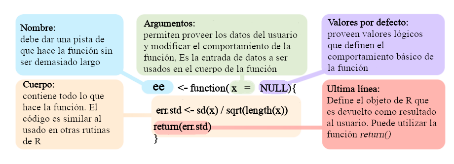

R basics
Analysis of animal acoustic signals in R
BOKU International Wildlife Lectures
BOKU International Wildlife Lectures
Marcelo Araya-Salas, PhD
“2022-03-13”
What is R?
- A free Domain-Specific-Language (DSL) for statistics and data analysis
- A collection of over 18949 (mar-9-2022) libraries
- A large and active community across industry and academia
- A way to talk “directly” to your computer
Historically:
- Based on the S Programming Language
- Around 20 years old (Lineage dates from 1975 - almost 40 years ago)

Rstudio
Integrated development environment (IDE) for R. Includes:
- A console
- Syntax-highlighting editor that supports direct code execution
- Tools for plotting, history, debugging and workspace management

Elements of the R language
- Vectors
- Lists
- Matrices
- Data Frames
- Tables
- Functions (including operators)
- Attributes
ArraysEnvironments
Data structure
The basic data structure in R is the vector. There are two basic types of vectors: atomic vectors and lists.
They have three common properties:
- Type,
typeof()(~ class/mode) - Length,
length()(number of elements) - Attributes,
attributes()(metadata)
They differ in the types of their elements: all elements of an atomic vector must be the same type, whereas the elements of a list can have different types.
| Homogeneous | Heterogeneous | |
|---|---|---|
| 1d | Atomic vector | List |
| 2d | Matrix | Data frame |
| nd | Array |
R has no 0-dimensional elements (scalars). Individual numbers or strings are actually vectors of length one.
Atomic vectors
Types of atomic vectors:
- Logical (boolean)
- Integer
- Numeric (double)
- Character
Vectors are built using c():
x <- 1
x1 <- c(1)
all.equal(x, x1)
## [1] TRUE
class(x)
## [1] "numeric"
y <- "something"
class(y)
## [1] "character"
w <- 1L
class(w)
## [1] "integer"
z <- TRUE
class(z)
## [1] "logical"
q <- factor(1)
class(q)
## [1] "factor"
Vectors can only contain entries of the same type. Different types will be coerced to the most flexible type:
v <- c(10, 11, 12, 13)
class(v)
## [1] "numeric"
typeof(v)
## [1] "double"
is.integer(v)
## [1] FALSE
y <- c("Amazona", "Ara", "Eupsittula", "Myiopsitta")
class(y)
## [1] "character"
is.integer(y)
## [1] FALSE
x <- c(1,2,3, "Myiopsitta")
x
## [1] "1" "2" "3" "Myiopsitta"
class(x)
## [1] "character"
Missing values are specified with NA, which is a logical vector of length 1. NA will always be coerced to the correct type if used inside c():
v <- c(10, 11, 12, 13, NA)
class(v)
## [1] "numeric"
v <- c(letters[1:3], NA)
class(v)
## [1] "character"
Lists
Can contain objects of different classes and sizes. Lists are built using list():
l <- list(ID = letters[1:5], size = rnorm(6), observed = c(FALSE, TRUE, FALSE, FALSE, FALSE))
l## $ID
## [1] "a" "b" "c" "d" "e"
##
## $size
## [1] -1.91076 1.48046 2.38150 1.56967 0.60655 -0.33370
##
## $observed
## [1] FALSE TRUE FALSE FALSE FALSEclass(l)## [1] "list"str(l)## List of 3
## $ ID : chr [1:5] "a" "b" "c" "d" ...
## $ size : num [1:6] -1.911 1.48 2.382 1.57 0.607 ...
## $ observed: logi [1:5] FALSE TRUE FALSE FALSE FALSE… and dimensions:
l <- list(ID = letters[1:5], size = rnorm(6), observed = c(FALSE, TRUE, FALSE, FALSE, FALSE), l)
str(l)## List of 4
## $ ID : chr [1:5] "a" "b" "c" "d" ...
## $ size : num [1:6] 1.28 -0.437 1.273 -1.447 -1.306 ...
## $ observed: logi [1:5] FALSE TRUE FALSE FALSE FALSE
## $ :List of 3
## ..$ ID : chr [1:5] "a" "b" "c" "d" ...
## ..$ size : num [1:6] -1.911 1.48 2.382 1.57 0.607 ...
## ..$ observed: logi [1:5] FALSE TRUE FALSE FALSE FALSEl2 <- list(l, l)
str(l2)## List of 2
## $ :List of 4
## ..$ ID : chr [1:5] "a" "b" "c" "d" ...
## ..$ size : num [1:6] 1.28 -0.437 1.273 -1.447 -1.306 ...
## ..$ observed: logi [1:5] FALSE TRUE FALSE FALSE FALSE
## ..$ :List of 3
## .. ..$ ID : chr [1:5] "a" "b" "c" "d" ...
## .. ..$ size : num [1:6] -1.911 1.48 2.382 1.57 0.607 ...
## .. ..$ observed: logi [1:5] FALSE TRUE FALSE FALSE FALSE
## $ :List of 4
## ..$ ID : chr [1:5] "a" "b" "c" "d" ...
## ..$ size : num [1:6] 1.28 -0.437 1.273 -1.447 -1.306 ...
## ..$ observed: logi [1:5] FALSE TRUE FALSE FALSE FALSE
## ..$ :List of 3
## .. ..$ ID : chr [1:5] "a" "b" "c" "d" ...
## .. ..$ size : num [1:6] -1.911 1.48 2.382 1.57 0.607 ...
## .. ..$ observed: logi [1:5] FALSE TRUE FALSE FALSE FALSE
Attributes
Objects can have attributes. Attributes allow to store metadata about the object. Attributes are kind of named lists. Attributes can be accessed individually with attr() or all at once (as a list) with attributes():
y <- 1:10
mean(y)## [1] 5.5attr(y, "my_attribute") <- "This is an attribute"
attr(y, "my_attribute")## [1] "This is an attribute"str(y)## int [1:10] 1 2 3 4 5 6 7 8 9 10
## - attr(*, "my_attribute")= chr "This is an attribute"
structure() returns a new object with modified attributes:
y <- structure(1:10, my_attribute = "This is an attribute")
attributes(y)## $my_attribute
## [1] "This is an attribute"
Most attributes are lost when modifying a vector:
attributes(y[1])## NULL
The only attributes not lost are the three most important:
- Names, a character vector giving each element a name, described in names
- Dimensions
- Class
w <- structure(c(a =1, b = 2), my_attribute = "This is not an apple")
attributes(w)## $names
## [1] "a" "b"
##
## $my_attribute
## [1] "This is not an apple"attributes(w[1])## $names
## [1] "a"class(w[1])## [1] "numeric"
Names
Vectors can be named in three ways:
- When creating it:
x <- c(a = 1, b = 2, c = 3) - By modifying an existing vector in place:
x <- 1:3;names(x) <- c("a", "b", "c")Or:x <- 1:3;names(x)[[1]] <- c("a") - By creating a modified copy of a vector:
x <- setNames(1:3, c("a", "b", "c"))
y <- c(a = 1, 2, 3)
names(y)## [1] "a" "" ""v <- c(1, 2, 3)
names(v) <- c('a')
names(v)## [1] "a" NA NAz <- setNames(1:3, c("a", "b", "c"))
names(z)## [1] "a" "b" "c"
Factors
Attributes are used to define factors. A factor is a vector that can contain only predefined values, and is used to store categorical data.
Factors are built on top of integer vectors using two attributes:
- class “factor”: makes them behave differently from regular integer vectors
- levels: defines the set of allowed values
x <- factor(c("a", "b", "b", "a"))
x## [1] a b b a
## Levels: a blevels(x)## [1] "a" "b"str(x)## Factor w/ 2 levels "a","b": 1 2 2 1
Factors look like character vectors but they are actually integers:
x <- factor(c("a", "b", "b", "a"))
c(x)## [1] a b b a
## Levels: a b
Matrices
All entries are of the same type:
m <- matrix(c(1, 2, 3, 11, 12, 13), nrow = 2)
dim(m)## [1] 2 3m## [,1] [,2] [,3]
## [1,] 1 3 12
## [2,] 2 11 13class(m)## [1] "matrix" "array"m <- matrix(c(1, 2, 3, 11, 12,"13"), nrow = 2)
m## [,1] [,2] [,3]
## [1,] "1" "3" "12"
## [2,] "2" "11" "13"
Can be created by modifying the dimension attribute:
c <- 1:6
is.matrix(c)## [1] FALSEattributes(c)## NULLdim(c) <- c(3, 2)
c## [,1] [,2]
## [1,] 1 4
## [2,] 2 5
## [3,] 3 6is.matrix(c)## [1] TRUEattributes(c)## $dim
## [1] 3 2
Data frames
Special case of lists. Can contain entries of different types:
m <- data.frame(ID = letters[1:5], size = rnorm(5), observed = c(FALSE, TRUE, FALSE, FALSE, FALSE))
dim(m)## [1] 5 3m## ID size observed
## 1 a 0.69341 FALSE
## 2 b 1.41333 TRUE
## 3 c 0.76004 FALSE
## 4 d 0.75104 FALSE
## 5 e 1.92036 FALSEclass(m)## [1] "data.frame"is.data.frame(m)## [1] TRUEis.list(m)## [1] TRUEstr(m)## 'data.frame': 5 obs. of 3 variables:
## $ ID : chr "a" "b" "c" "d" ...
## $ size : num 0.693 1.413 0.76 0.751 1.92
## $ observed: logi FALSE TRUE FALSE FALSE FALSE
But vectors should have the same length:
m <- data.frame(ID = letters[1:5], size = rnorm(6), observed = c(FALSE, TRUE, FALSE, FALSE, FALSE))## Error in data.frame(ID = letters[1:5], size = rnorm(6), observed = c(FALSE, : arguments imply differing number of rows: 5, 6
Note: data.frame() turns strings into factors by default. Use stringsAsFactors = FALSE to suppress this behavior:
m <- data.frame(ID = letters[1:5], size = rnorm(6), observed = c(FALSE, TRUE, FALSE, FALSE, FALSE), stringsAsFactors = FALSE)## Error in data.frame(ID = letters[1:5], size = rnorm(6), observed = c(FALSE, : arguments imply differing number of rows: 5, 6str(m)## 'data.frame': 5 obs. of 3 variables:
## $ ID : chr "a" "b" "c" "d" ...
## $ size : num 0.693 1.413 0.76 0.751 1.92
## $ observed: logi FALSE TRUE FALSE FALSE FALSE
Complex elements can be added to a data frame using I() to treat the list as one unit:
m <- data.frame(ID = letters[1:5], size = I(matrix(1:10, nrow = 5)), observed = c(FALSE, TRUE, FALSE, FALSE, FALSE))
m## ID size.1 size.2 observed
## 1 a 1 6 FALSE
## 2 b 2 7 TRUE
## 3 c 3 8 FALSE
## 4 d 4 9 FALSE
## 5 e 5 10 FALSEstr(m)## 'data.frame': 5 obs. of 3 variables:
## $ ID : chr "a" "b" "c" "d" ...
## $ size : 'AsIs' int [1:5, 1:2] 1 2 3 4 5 6 7 8 9 10
## $ observed: logi FALSE TRUE FALSE FALSE FALSE
Data subsetting
Indexing
Elements within objects can be called by indexing. To subset a vector simply call the object position using square brackets:
x <- c(1, 3, 4, 10, 15, 20, 50, 1, 6)
x[1]## [1] 1x[2]## [1] 3x[2:3]## [1] 3 4x[c(1,3)]## [1] 1 4
Elements can be removed in the same way:
x[-1]## [1] 3 4 10 15 20 50 1 6x[-c(1,3)]## [1] 3 10 15 20 50 1 6
Matrices and data frames required 2 indices [row, column]:
m <- matrix(c(1, 2, 3, 11, 12, 13), nrow = 2)
m[1, ]## [1] 1 3 12m[, 1]## [1] 1 2m[1, 1]## [1] 1m[-1, ]## [1] 2 11 13m[, -1]## [,1] [,2]
## [1,] 3 12
## [2,] 11 13m[-1, -1]## [1] 11 13df <- data.frame(family = c("Psittacidae", "Trochilidae",
"Psittacidae"),
genus = c("Amazona", "Phaethornis", "Ara"),
species = c("aestiva", "philippii", "ararauna"))
df## family genus species
## 1 Psittacidae Amazona aestiva
## 2 Trochilidae Phaethornis philippii
## 3 Psittacidae Ara araraunadf[1, ]## family genus species
## 1 Psittacidae Amazona aestivadf[, 1]## [1] "Psittacidae" "Trochilidae" "Psittacidae"df[1, 1]## [1] "Psittacidae"df[-1, ]## family genus species
## 2 Trochilidae Phaethornis philippii
## 3 Psittacidae Ara araraunadf[, -1]## genus species
## 1 Amazona aestiva
## 2 Phaethornis philippii
## 3 Ara araraunadf[-1, -1]## genus species
## 2 Phaethornis philippii
## 3 Ara araraunadf[,"family"]## [1] "Psittacidae" "Trochilidae" "Psittacidae"df[,c("family", "genus")]## family genus
## 1 Psittacidae Amazona
## 2 Trochilidae Phaethornis
## 3 Psittacidae Ara
Lists require 1 index within double square brackets [[index]]:
l <- list(ID = letters[1:5], size = rnorm(6), observed = c(FALSE, TRUE, FALSE, FALSE, FALSE))
l[[1]]## [1] "a" "b" "c" "d" "e"l[[3]]## [1] FALSE TRUE FALSE FALSE FALSE
Elements within lists can also be subset in the same string of code:
l[[1]][1:2]## [1] "a" "b"l[[3]][2]## [1] TRUE
Exploring objects
str(df)## 'data.frame': 3 obs. of 3 variables:
## $ family : chr "Psittacidae" "Trochilidae" "Psittacidae"
## $ genus : chr "Amazona" "Phaethornis" "Ara"
## $ species: chr "aestiva" "philippii" "ararauna"names(df)## [1] "family" "genus" "species"dim(df)## [1] 3 3nrow(df)## [1] 3ncol(df)## [1] 3head(df)## family genus species
## 1 Psittacidae Amazona aestiva
## 2 Trochilidae Phaethornis philippii
## 3 Psittacidae Ara araraunatail(df)## family genus species
## 1 Psittacidae Amazona aestiva
## 2 Trochilidae Phaethornis philippii
## 3 Psittacidae Ara araraunatable(df$genus)##
## Amazona Ara Phaethornis
## 1 1 1typeof(df)## [1] "list"View(df)
Exercise
Using the example data
iristo create a data subset with only the observations of the species ‘setosa’Now create a data subset containing the observations of both ‘setosa’ and ‘versicolor’
Also with
iriscreate a data subset with the observations for whichiris$Sepal.lengthis higher than 6How many observations have a sepal length higher than 6?
Functions
All functions are created by the function function() and follow the same structure:

* Modified from Grolemund 2014
R comes with many functions that you can use to do sophisticated tasks:
# built in functions
bi <- builtins()
length(bi)## [1] 1370sample(bi, 10)## [1] "print.NativeRoutineList" "restartDescription"
## [3] ".F_dqrcf" "substring<-"
## [5] "mat.or.vec" "sys.on.exit"
## [7] "as.function" "backsolve"
## [9] "=" "close"
Operators are functions:
1 + 1## [1] 2'+'(1, 1)## [1] 22 * 3## [1] 6'*'(2, 3)## [1] 6
Most commonly used R operators
Arithmetic operators:
| Operator | Description |
|---|---|
| + | addition |
| - | subtraction |
| * | multiplication |
| / | division |
| ^ or ** | exponent |
| x %% y | modulus (x mod y) |
| x %/% y | integer division |
1 - 2## [1] -11 + 2## [1] 32 ^ 2## [1] 42 ** 2## [1] 45 %% 2## [1] 15 %/% 2## [1] 2
Logical operators:
| Operator | Description |
|---|---|
| < | less than |
| <= | less than or equal to |
| > | greater than |
| >= | greater than or equal to |
| == | exactly equal to |
| != | not equal to |
| !x | Not x |
| x | y | x OR y |
| x & y | x AND y |
| x %in% y | match |
1 < 2 ## [1] TRUE1 > 2 ## [1] FALSE1 <= 2 ## [1] TRUE1 == 2## [1] FALSE1 != 2## [1] TRUE1 > 2 ## [1] FALSE5 %in% 1:6## [1] TRUE5 %in% 1:4## [1] FALSE
Most functions are vectorized:
1:6 * 1:6
* Modified from Grolemund & Wickham 2017
## [1] 1 4 9 16 25 361:6 - 1:6## [1] 0 0 0 0 0 0R recycles vectors of unequal length:
1:6 * 1:5
* Modified from Grolemund & Wickham 2017
## Warning in 1:6 * 1:5: longitud de objeto mayor no es múltiplo de la longitud de
## uno menor## [1] 1 4 9 16 25 61:6 + 1:5## Warning in 1:6 + 1:5: longitud de objeto mayor no es múltiplo de la longitud de
## uno menor## [1] 2 4 6 8 10 7
Style matters
Based on google’s R Style Guide
File names
File names should end in .R and, of course, be meaningful:
- GOOD: predict_ad_revenue.R
- BAD: foo.R
Object names
Variables and functions:
- Lowercase
- Use an underscore (_) (HW style)
- Generally, nouns for variables and verbs for functions
- Strive for names that are concise and meaningful (not always easy)
- Avoid using names of existing functions of variables
- GOOD: day_one: day_1, mean.day(),
- BAD: dayOne, day1, firstDay_of.month, mean <- function(x) sum(x), c <- 10
Syntax
Spacing:
- Use spaces around operators and for argument within a function
- Always put a space after a comma, and never before (just like in regular English)
- Place a space before left parenthesis, except in a function call
- GOOD:
a <- rnorm(n = 10, sd = 10, mean = 1)
tab.prior <- table(df[df$days.from.opt < 0, "campaign.id"])
total <- sum(x[, 1])
total <- sum(x[1, ])
if (debug)
mean(1:10)
- BAD:
a<-rnorm(n=10,sd=10,mean=1)
tab.prior <- table(df[df$days.from.opt<0, "campaign.id"]) # Needs spaces around '<'
tab.prior <- table(df[df$days.from.opt < 0,"campaign.id"]) # Needs a space after the comma
tab.prior<- table(df[df$days.from.opt < 0, "campaign.id"]) # Needs a space before <-
tab.prior<-table(df[df$days.from.opt < 0, "campaign.id"]) # Needs spaces around <-
total <- sum(x[,1]) # Needs a space after the comma
total <- sum(x[ ,1]) # Needs a space after the comma, not before
if(debug) # Needs a space before parenthesis
mean (1:10) # ) # Extra space before parenthesis
Curly braces:
- An opening curly brace should never go on its own line
- Closing curly brace should always go on its own line
- You may omit curly braces when a block consists of a single statement
- GOOD:
if (is.null(ylim)) {
ylim <- c(0, 0.06)
}
if (is.null(ylim))
ylim <- c(0, 0.06)
- BAD:
if (is.null(ylim)) ylim <- c(0, 0.06)
if (is.null(ylim)) {ylim <- c(0, 0.06)}
if (is.null(ylim)) {
ylim <- c(0, 0.06)
}
Assigments:
- Use <-, not =
- GOOD:
x <- 5
- BAD:
x = 5
Commenting guidelines:
- Comment your code
- Entire commented lines should begin with # and one space
- Short comments can be placed after code preceded by two spaces, #, and then one space
# Create histogram of frequency of campaigns by pct budget spent.
hist(df$pct.spent,
breaks = "scott", # method for choosing number of buckets
main = "Histogram: fraction budget spent by campaignid",
xlab = "Fraction of budget spent",
ylab = "Frequency (count of campaignids)")
General Layout and Ordering (google style):
- Copyright statement comment (?)
- Author comment
- File description comment, including purpose of program, inputs, and outputs
- source() and library() statements
- Function definitions
- Executed statements, if applicable (e.g., print, plot)
R documentation
Package documentation

Reference manuals
Reference manuals are collections of the documentation for all functions in a package (only 1 per package):
Function documentation
All functions (default or from loaded packages) must have a documentation that follows a standard format:
?mean
help("mean")
This documentation can also be shown in Rstudio by pressing F1 when the cursor is on the function name
If you don’t recall the function name try apropos():
apropos("mean")## [1] ".colMeans" ".rowMeans" "colMeans" "kmeans"
## [5] "mean" "mean.Date" "mean.default" "mean.difftime"
## [9] "mean.POSIXct" "mean.POSIXlt" "rowMeans" "weighted.mean"
Vignettes
Vignettes are illustrative documents or study cases detailing the use of a package (optional, can be several per package).
Vignettes can be called directly from R:
vgn <- browseVignettes() vignette()They should also be listed in the package CRAN page.
Demonstrations
Packages may also include extended code demonstrations (‘demos’). To list demos in a package run demo("package name"):
demo(package="stats")
# call demo directly
demo("nlm")
Exercise
What does the function
cut()do?What is the
breaksargument incut()used for?Run the first 4 lines of code in the examples supplied in the
cut()documentationHow many vignettes does the package warbleR has?
References
- Advanced R, H Wickham
- Google’s R Style Guide
- Hands-On Programming with R (Grolemund, 2014)